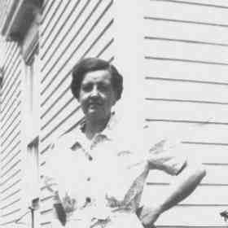

 Mary Lempi HILL (1891-1981) |
Mary Lempi HILL
Other names for Mary were Lempi M. 228 and Mary Limpe Jusilla HILL. Noted events in her life were: • Alt. Birth, 30 Oct 1891. 229 • Census, 8 Apr 1930, Vinalhaven, Knox Co., Maine, USA. 221 • Residence, 1931, Rockland, Knox Co., Maine, United States. 231 • Census, 10 Apr 1940, Vinalhaven, Knox Co., Maine, USA. 232 • Census, 6 Apr 1950, Vinalhaven, Knox Co., Maine, USA. 233 • Occupation, 25 Apr 1950. 233 Mary married Konsta John ASIALA on 25 Sep 1913 in Vinalhaven, Knox Co., Maine, USA 222.,223 (Konsta John ASIALA was born on 28 Sep 1887 in , , , Finland,221,229,234 died on 1 May 1971 in East Hampton, Middlesex Co., Connecticut 229 and was buried in 1971 in Lakeview Cmty, East Hampton, Middlesex Co., Connecticut 227.) |
Search using Google Custom Search:
Table of Contents | Surnames | Name List
This website was created 4 Mar 2025 with Legacy 10.0, a division of MyHeritage.com; content copyrighted and maintained by coddgenealogy at gmail d0t com